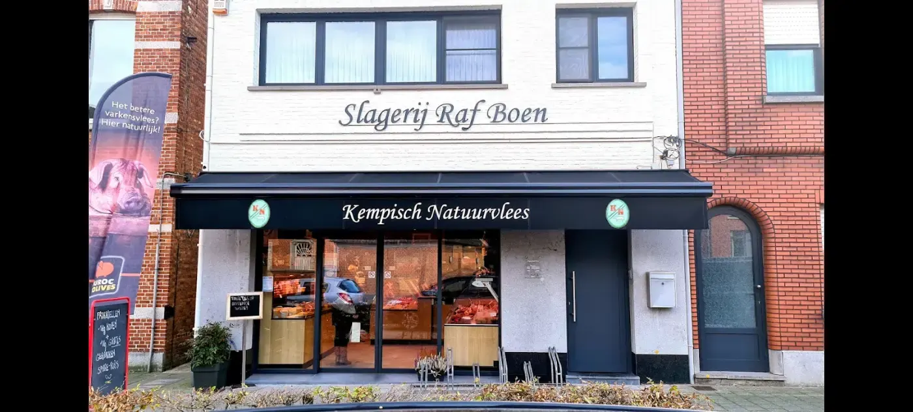
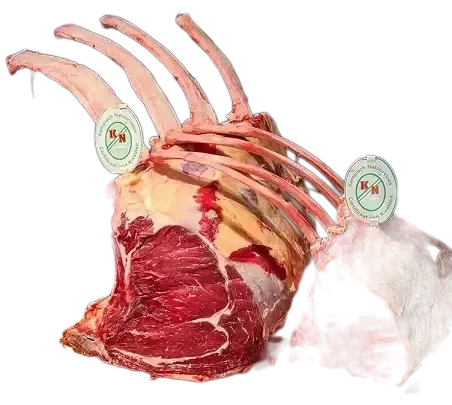
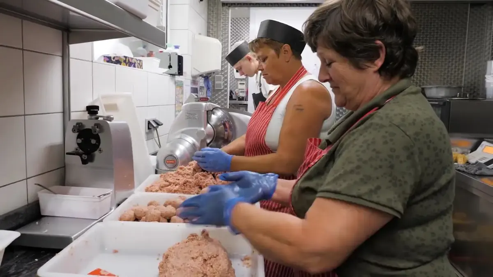
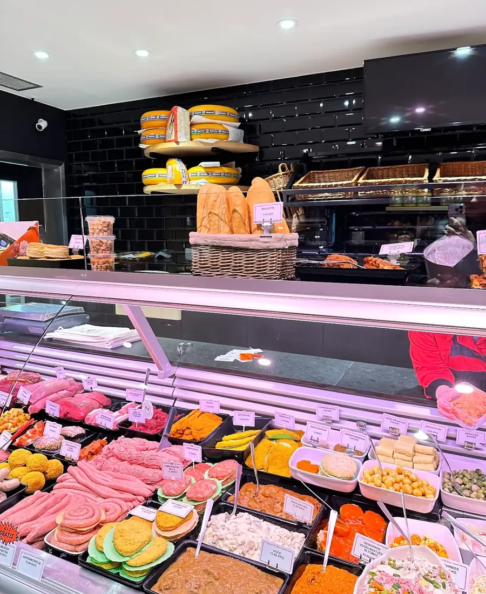
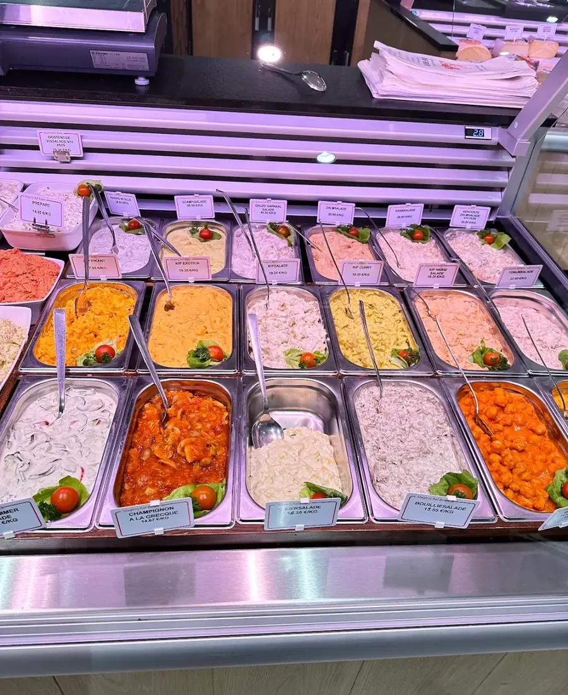
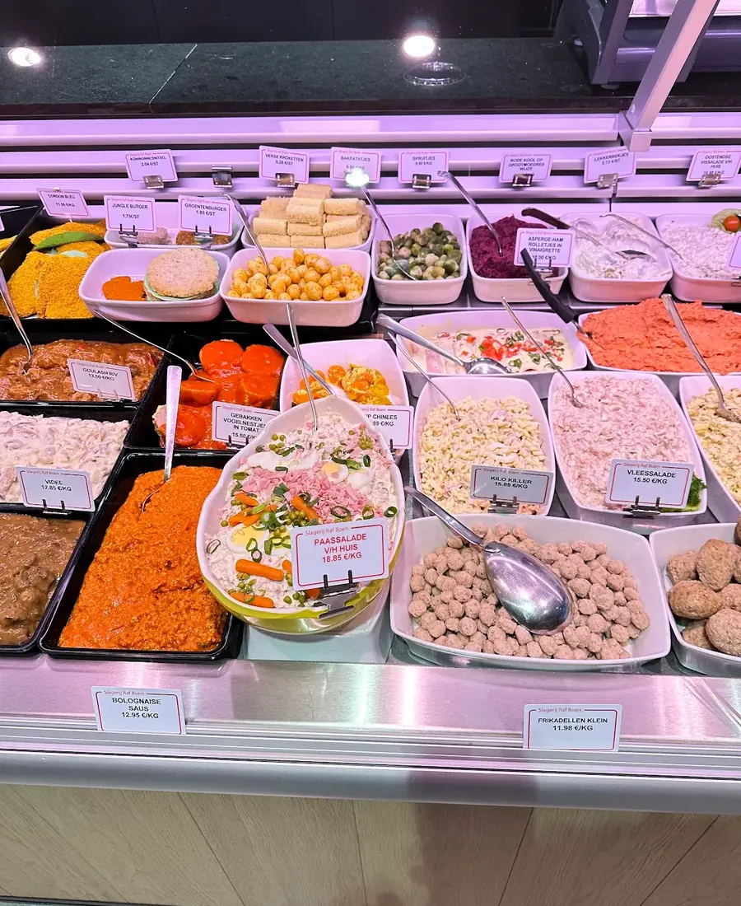
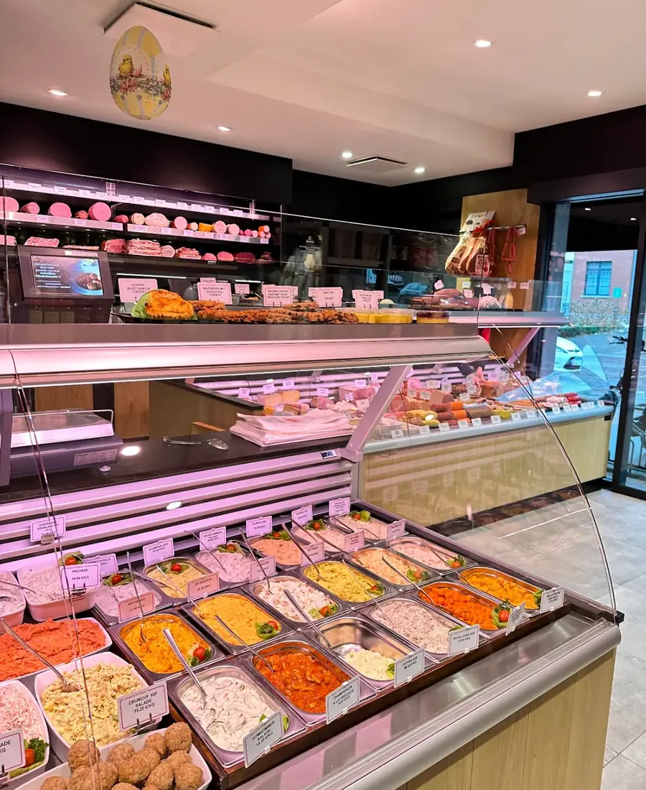
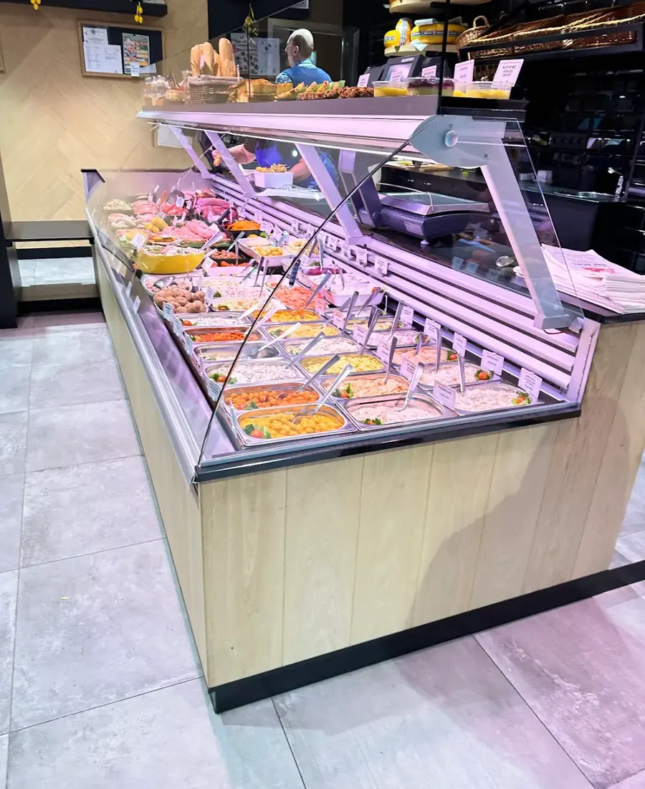
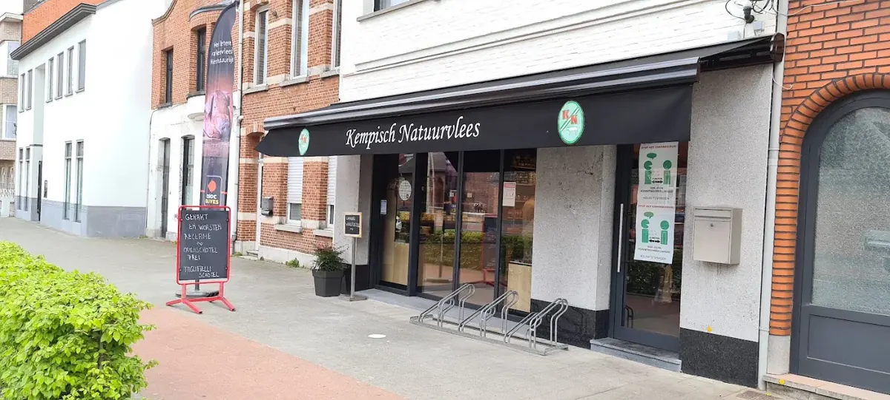

Vers vlees
Rund, kalf en varken. Vraag gerust een tip om het klaar te maken.
Kempisch Natuurvlees, rechtstreeks van twee boeren en volledig zelf uitgebeend. Met frikadellen die heel de streek kent, charcuterie van het huis en een traiteur waar je de feestdagen op kan bouwen.

Boudewijnstraat 13, Grobbendonk
Zolang de voorraad strekt. Ideaal om er een paar in te vriezen voor een drukke week.
Tot zoveel frikadellen gaan er elke week over de toonbank. Allemaal met de hand gedraaid, in het eigen atelier.

Raf koopt hele karkassen en beent ze zelf uit. Zo weet hij waar elk stuk vandaan komt. Kop, tong en restjes krijgen allemaal een bestemming.
Dat zegt een klant op Google, en ze heeft gelijk. Van vers vlees tot salades, dit ligt elke dag klaar.
Rund, kalf en varken. Vraag gerust een tip om het klaar te maken.

van het huisVleeswaren en charcuterie, waar de zaak om bekend staat.

vers gemaaktVoor op de boterham of bij de barbecue.

klaar om te bakkenHuisbereid, zodat je 's avonds snel aan tafel zit.
Feestkalkoen, gourmet of een koud buffet. Vraag de feestfolder in de winkel, of bel even.
Bel 014 51 78 03Raf groeide niet op tussen de messen. Thuis hadden ze een varken en een koe, en daar begon het. Hij studeerde eerst bedrijfsbeheer, maar op zijn zeventiende wist hij het al.


Een beenhouwer die zijn vak verstaat. Bijna een kilo varkenswangen gekocht en alles prachtig gekuist, zonder de smaakmakers te versnijden.
Keurslager met kwaliteitsvlees. Altijd welkom, en als je vragen hebt geven ze nog kook- of baksuggesties mee.
Deze slagerij heeft zoveel, kiezen is er altijd moeilijk. Altijd vriendelijke bediening.
